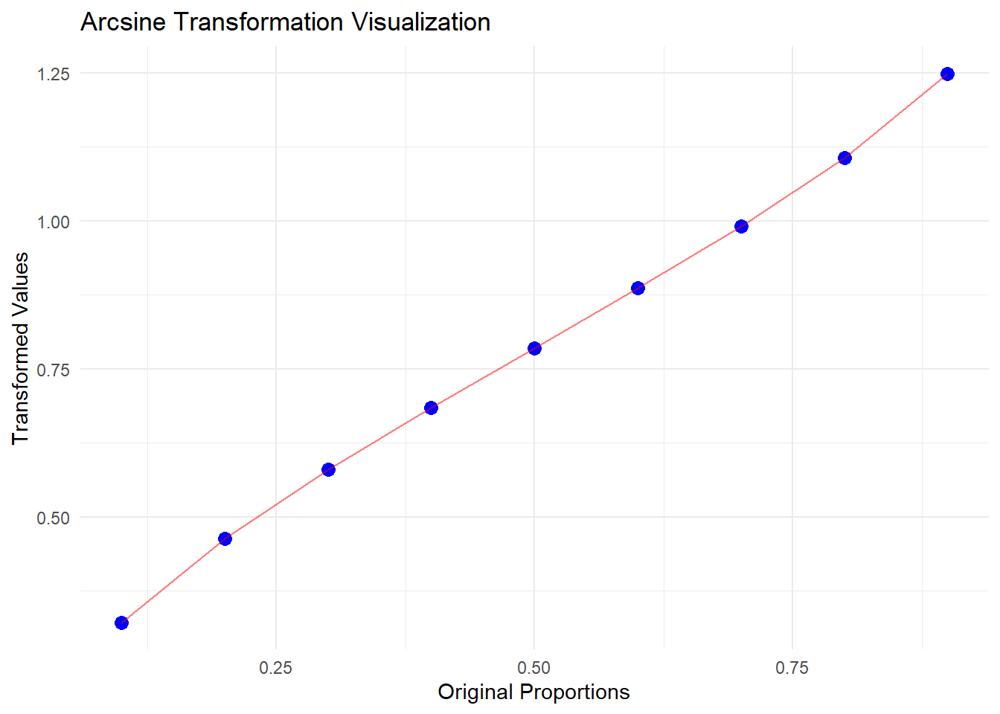

Comprehensive Guide to Arcsine Transformation in R with Examples
Unlock the power of the arcsine transformation in R with this comprehensive guide. Learn how to stabilize variance, normalize proportional data, and apply this technique to your statistical analyses. Explore practical examples, best practices, and alternatives to enhance your R programming skills.
code
rtip
Author
Steven P. Sanderson II, MPH
Published
December 29, 2024
Keywords
Programming, Arcsine Transformation, R Programming, Data Normalization, Statistical Analysis, Variance Stabilization, Proportional Data Transformation, R Data Visualization, Arcsine Function in R, Ecological Data Analysis, Statistical Methods in R, How to perform arcsine transformation in R, Best practices for arcsine transformation in statistical analysis, Visualizing arcsine transformed data in R, Handling proportion data with arcsine transformation in R, Understanding the effects of arcsine transformation on data distribution
Introduction to Arcsine Transformation
The arcsine transformation is a mathematical technique widely used in statistical analysis to stabilize variance and normalize data, particularly when dealing with proportions or percentages. This transformation is especially useful for data bounded between 0 and 1, such as proportions, as it helps meet the assumptions of normality required by many statistical methods.
In this guide, we will explore the concept of arcsine transformation, its importance, implementation in R, and practical examples tailored for R programmers.
Why Use Arcsine Transformation?
Key Benefits
Variance Stabilization: Proportional data often exhibit heteroscedasticity (non-constant variance). The arcsine transformation stabilizes variance, making the data more suitable for statistical analysis.
Normalization: It helps approximate a normal distribution, which is crucial for parametric tests like ANOVA and regression.
Handling Proportional Data: Particularly useful for ecological, biological, and meta-analytical studies where proportions of 0% or 100% are common.
No Continuity Correction Needed: Unlike log or logit transformations, the arcsine transformation can handle zero values without requiring adjustments.
Limitations
Interpretation Challenges: Transformed data may not be as intuitively interpretable as the original data.
Bounded Domain: The transformation is limited to data within the range of 0 to 1, requiring scaling for other ranges.
Mathematical Formulation
The arcsine transformation is defined as: [ Y = ^{-1}() ]
Where: - (X) is the proportion data (values between 0 and 1). - (Y) is the transformed data.
This transformation pulls the ends of the distribution closer, stabilizing variance and making the data more symmetric.
Implementing Arcsine Transformation in R
Basic Transformation on a Vector
The asin() function in R is used for arcsine transformation. Here’s an example:
# Create a vector with values between 0 and 1data <-c(0.3, 0.2, 0.4, 0.5, 0.6, 0.7, 0.8, 0.34)# Perform arcsine transformationtransformed_data <-asin(sqrt(data))# Display the transformed dataprint(transformed_data)
This approach is useful for transforming specific columns in a dataset.
Handling Data Outside the 0 to 1 Range
If your data contains values outside the range of 0 to 1, you need to scale it before applying the transformation:
# Create a vector with values outside the 0 to 1 rangedata <-c(23, 45, 32, 2, 34, 21, 22, 67)# Scale the data to the 0 to 1 rangescaled_data <- data /max(data)# Perform arcsine transformationtransformed_scaled_data <-asin(sqrt(scaled_data))# Display the transformed dataprint(transformed_scaled_data)
Scaling ensures the data is appropriately prepared for the arcsine transformation.
Common Pitfalls and Misconceptions
Misinterpretation of Transformed Data: Transformed values are not directly interpretable in the original scale. Always back-transform for reporting.
Inappropriate Use: The transformation is only valid for proportional data. Applying it to other types of data can lead to errors.
Assumption of Normality: While the transformation helps approximate normality, it does not guarantee it.
Scaling Oversight: Forgetting to scale data outside the 0 to 1 range can result in incorrect results.
Real-World Applications
Health Sciences: Used in meta-analyses to synthesize proportions like disease prevalence and diagnostic test accuracy.
Ecology: Applied to analyze species proportions in ecosystems.
Psychology: Used in experimental designs to analyze proportions, such as success rates in behavioral studies.
Meta-Analysis: The Freeman–Tukey double-arcsine transformation is a variant used for stabilizing variances in meta-analyses.
Alternatives to Arcsine Transformation
While the arcsine transformation is effective, other methods may be more suitable depending on the data: 1. Logit Transformation: Maps proportions to the entire real number line, useful for regression analysis. 2. Box-Cox Transformation: A flexible family of transformations for stabilizing variance. 3. Log Transformation: Reduces skewness in positively skewed data. 4. Double Arcsine Transformation: Specifically designed for meta-analyses.
Advantages and Limitations
Advantages
Stabilizes variance for proportional data.
Approximates normality for parametric tests.
Handles zero counts without continuity corrections.
Limitations
Lack of intuitive interpretation.
Complex back-transformation.
Limited to data within the 0 to 1 range.
Your Turn! Practical Exercise
Problem
Create a comprehensive R function that:
Takes a vector of proportions or percentages
Validates the input data (checks for 0-1 range)
Applies the arcsine transformation
Creates a visualization comparing original vs transformed data
Returns both the transformed values and the plot
Try solving this before looking at the solution!
Click to reveal solution
arcsine_transform_visualize <-function(data) {# Input validationif (!all(data >=0& data <=1)) {stop("All values must be between 0 and 1") }# Apply transformation transformed <-asin(sqrt(data))# Create visualizationif (!require(ggplot2)) {install.packages("ggplot2")library(ggplot2) }# Create data frame for plotting plot_data <-data.frame(Original = data,Transformed = transformed )# Create plot plot <-ggplot(plot_data, aes(x = Original, y = Transformed)) +geom_point(color ="blue", size =3) +geom_line(color ="red", alpha =0.5) +labs(title ="Arcsine Transformation Visualization",x ="Original Proportions",y ="Transformed Values" ) +theme_minimal()# Return results as a listreturn(list(transformed_values = transformed,comparison_plot = plot,summary_stats =summary(transformed) ))}# Test the functiontest_data <-seq(0.1, 0.9, by =0.1)results <-arcsine_transform_visualize(test_data)
Min. 1st Qu. Median Mean 3rd Qu. Max.
0.3218 0.5796 0.7854 0.7854 0.9912 1.2490
results$comparison_plot

Test Your Understanding
After implementing the solution, try answering these questions: 1. Why do we need to check if ggplot2 is installed? 2. What happens if we input values greater than 1? 3. How would you modify the function to handle percentage data (0-100)? 4. Can you explain the shape of the transformation curve in the plot?
This exercise combines several key concepts we’ve covered and provides practical experience with both the transformation and data visualization in R.
Conclusion
The arcsine transformation is a powerful tool for stabilizing variance and normalizing proportional data, making it indispensable in fields like ecology, health sciences, and meta-analysis. By understanding its implementation, advantages, and limitations, R programmers can effectively apply this transformation to enhance their statistical analyses.
FAQs
1. What is the purpose of the arcsine transformation?
The arcsine transformation stabilizes variance and normalizes proportional data, making it suitable for parametric statistical tests.
2. Can I use the arcsine transformation for data outside the 0 to 1 range?
No, you must scale the data to the 0 to 1 range before applying the transformation.
3. How do I back-transform arcsine-transformed data?
Use the formula ( X = ((Y))^2 ) to back-transform the data to its original scale.
4. What are some alternatives to the arcsine transformation?
Alternatives include the logit transformation, Box-Cox transformation, and double arcsine transformation.
5. Is the arcsine transformation suitable for all types of data?
No, it is specifically designed for proportional data. Other transformations may be more appropriate for different data types.
Comment and Share!
If you found this guide helpful, share it with your peers and let us know your thoughts in the comments below.
Comment and Share!
If you found this guide helpful, share it with your peers and let us know your thoughts in the comments below.